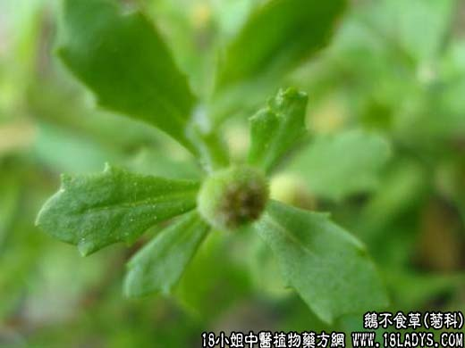

【中药概述】
鹅不食草为菊科草本植物鹅不食草的全草。辛，温。归肺、肝经。
1．祛风通窍：用于风寒表证，感冒鼻塞，急、慢性鼻炎，过敏性鼻炎，慢性支气管炎（研细末吸入鼻内）及风湿关节炎。
2．祛痰止咳：用于风寒咳嗽或寒痰咳嗽。常配生姜，紫苏，陈皮等，以增强散寒化痰的功效。
3．解毒消肿：用于喉痹等，可与蚤休，紫花地丁等配伍。
【临证应用】
治疗慢性鼻窦炎、过敏性鼻炎、感冒鼻塞。取本品与辛夷煎浓水滴鼻。
【药理作用】
水煎剂对结核杆菌有抑制作用。
【化学成分】
含多种三萜成分、蒲公英赛醇、蒲公英留醇等。
【用量用法】
9——18g，水煎服。
【使用注意】
本品对胃肠道有一定刺激性，可引起急性腹痛、胃脘不适、恶心、呕吐等。